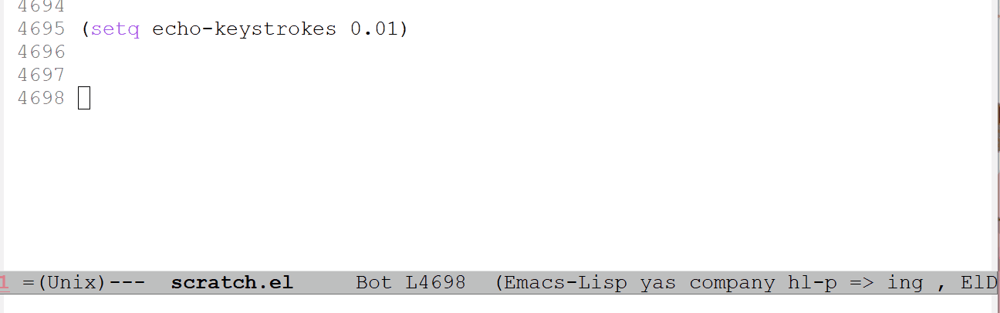
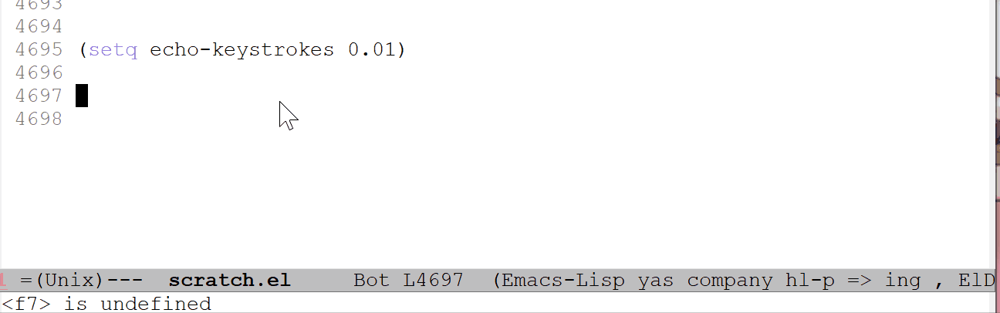
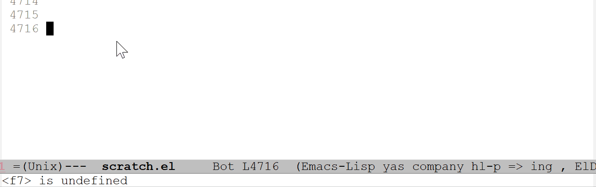
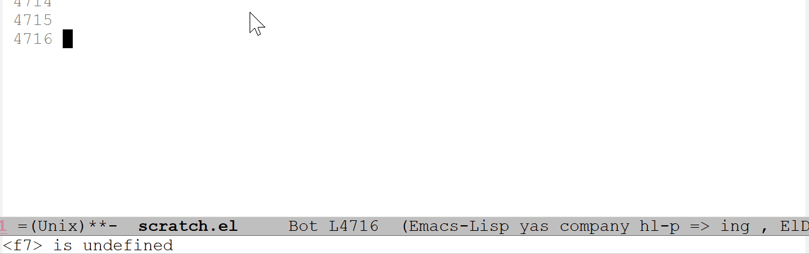
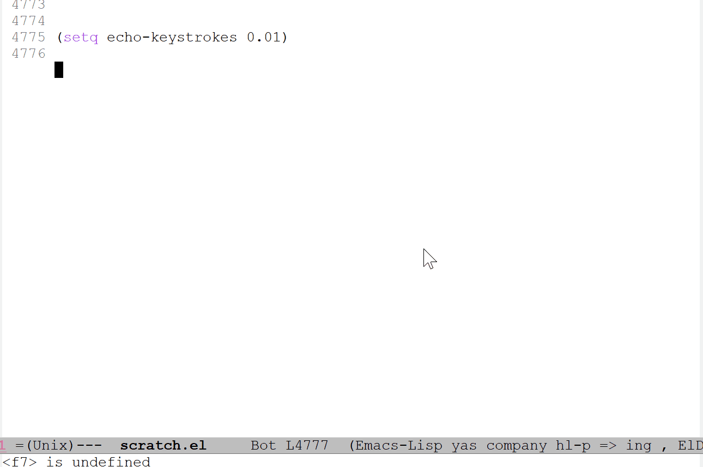

6-什么是dsl和作为dsl的cl-loop
Table of Contents
大约两年前，我在松本行弘的《代码的未来》中首次了解到了 DSL 这个词，但也仅限于了解的程度，毕竟当时我连 C 语言的基本用法都没有完全掌握。前些天学习 cl-loop 的时候，我又突然想了起来。借此机会学习一下 dsl 和 cl-loop 是个不错的选择。
本文关于 dsl 的叙述主要参考了 wikipedia 和 《代码的未来》，关于 cl-loop 的内容主要参考 cl-lib 的有关文档。由于本人并非是什么编程语言专家，dsl 的部分只能尽量参考权威资料，其中难免有疏漏之处，如有发现还请指出。
本文的主要内容如下：
- 什么是 DSL
- elisp 中的 cl-loop
1 什么是 DSL（domain-specific language）
DSL 是一种用于特殊应用领域的编程语言。DSL 与 GPL（通用目的语言，即 general-purose language）相对，通用语言可用于多个领域。在《代码的未来》一书中作者这样写道：
所谓 DSL，是指利用为特定领域所专门设计的词汇和语法，简化程序设计过程，提高生产效率的技术，同时也让非编程领域专家的人直接描述逻辑成为可能。DSL 的优点是可以直接使用对象领域中的概念，集中描述 What，而不必对 How 进行描述。
DSL 并不单指程序语言，它是指计算机语言。DSL 还可以根据语言的种类继续细分，如特定领域标记语言，特定领域建模语言，特定领域程序语言等。特定目的的计算机语言从计算机开始存在时就有了，但是 DSL 这个提法是随着特定领域建模的兴起而变得流行的。仅用于简单的小程序的 DSL 有时也被叫做迷你语言（mini-languages）。松本行宏还这样写道：
DSL 这个对特定目的的小规模语言的称呼，是最近才出现的比较新的叫法，但这种方法本身并不是什么稀罕的东西，尤其是 UNIX 社区中就诞生了许多用来解释像这样的“专用语言”的工具。
其中，以列为单位进行文本处理的脚本语言 awk 算是比较有名的，除此之外，UNIX 中还开发了许多“迷你语言”，比如用来描述依赖关系的 Makefile 和用来读取它的 make 命令，以行为单位进行数据流编辑的 sed 命令、用来描述文档中嵌入图像的 pic 命令，用来生成表格的 tbl 命令等等。此外，为了对这些迷你语言的编写提供支持，UNIX 中还提供了语法分析器生成工具 yacc，以及词法分析器生成工具 lex，而 yacc 和 lex 本身也用于自己的迷你语言。
这些迷你语言几乎都是专用于特定用途的，大多数情况下无法完成复杂的工作，但是它们都能够比较简单的配置文件描述更多的内容，并为命令的处理带来了更大的灵活性，因此和 DSL 在本质上是相同的。
通用目的语言和特定领域语言的分界线并不一定非常明显，通用目的语言可能对某个特定领域提供专门的特性，而特定领域语言可能可以用于通用目的编程。例如，Perl 原本被设计为文本处理语言和胶水语言，就像 awk 一样，但是它随后被作为通用目的程序语言使用了。与之相对的，PostScript 是一种图灵完备的语言，可用于任何任务，但它主要用来描述页面。
1.1 内部 DSL 与 外部 DSL
使用独立的解释器或编译器实现的 DSL 被称为外部 DSL（External Domain Specific Language），比较有名的例子有 LaTex 或 AWK。
外部 DSL 的优点在于它是独立于程序开发语言的。对某个特定领域进行操作的程序不一定是使用同一种语言来写的。SQL 就是一种 DSL，学会了 SQL 就可以在不同的语言中使用相同的 SQL 来操作数据库。
外部 DSL 实际上是全新设计的语言和语言引擎，因此可以根据它的目的进行自由的设计，不必被特定的执行模块和现有的语法所左右。由于自由度很高，在特定领域中能够大幅度提高生产效率。但是，使用外部 DSL 也就意味着需要学习一门新的语言，会带来额外的学习负担。
内部 DSL（Embedded/Internal Domain Specific Language）则是在一个宿主语言（host language）中实现，它一般以库的形式实现，并倾向于使用宿主语言中的语法。
内部 DSL 的优点和缺点与外部 DSL 相反，它借助了宿主语言的语法，程序员无需学习一种新的语言。但是它被限制在宿主语言能够描述的范围内，因此自由度较低。
1.2 DSL 的优点和缺点
中文的维基百科居然没有英文对应的翻译（汗），这里我自己翻译一下：
DSL 的优点：
- DSL 允许使用在问题领域的抽象层次的术语来表达问题的解。理想情况下领域专家应该可以理解，验证，修改甚至开发 DSL 程序，但是这种情况很少见。
- DSL 有助于将商业信息系统的开发从传统的软件开发人员转移到群体更大的领域专家，它们对领域有着更加深入的了解。
- 由于 DSL 限制了应用范围，它们学起来比较容易
DSL 的缺点
- 学习一门新语言的成本可能大于掌握它带来的提升
- 需要对 DSL 进行设计，实现和维护，以及提供开发工具
- 在通用目的语言和特定领域语言中找到一个合适的折衷是很困难的
- 不会编程的领域专家可能会觉得编写 DSL 很困难
- 很难找到代码示例
2 elisp 中的 cl-loop
我在上一篇文章中简单介绍了 cl-loop 的用法，我感觉日常是够用了，但是还不够全面。这篇文章里我会把参考文档里面所有的内容做一个总结，并给出足够详细的例子。
cl-loop 当然算是一种 DSL，而且是内部 DSL。相比于学习一个库，这里我还是用学习语言的步骤来整理整个文档比较好。程序的基本结构有三种：顺序、选择和循环。不妨从这三个方面来对 cl-loop 进行顺序介绍。
首先我们需要知道的是， cl-loop 是一种基于语句的 DSL，在文档中它的形式就是 cl-loop clauses ... 。语句的类型大致是这几种：初始化语句（initialization clause），动作语句（action clause）和结束语句（final clause）。
2.1 the Basic
首先，让我们看看如果没有任何语句的话 cl-loop 会给出怎样的结果：
(cl-loop)
将光标放到表达式的后面，按下 C-x C-e 运行这段代码，你会发现 emacs 的光标无法移动了，再摁 C-g 你又发现它可以动了，就像这样：

这就说明没有语句的 cl-loop 就是个死循环，下面的例子可以更好地说明这一点：

（这里的 do 也可以省略，至于 do 的作用下面会说）
为啥它不会停止呢？如果我们在 cl-loop 里面使用正常的 for 语句之类的迭代语句的话，在迭代达到终止条件后整个 cl-loop 表达式就停止执行了。文档里面没有说这一点，毕竟用于循环的 cl-loop 没多大必要考虑单条非循环语句的执行。这里我只能做个猜想，那就是： cl-loop 维护了一个标志，当专用的迭代语句执行完毕后标值变为真，从而完成 cl-loop 的执行。
另外一个问题就是 cl-loop 这个表达式的返回值， cl-loop 在内部是提供了 return 关键字的，可以使用它来不经过迭代语句的终止而直接退出循环，就像这样：

可以看到，前一个 cl-loop 的返回值是 nil ，后一个 cl-loop 直接返回 55。也就是说，单纯的迭代语句是无法影响 cl-loop 表达式的返回值的。不过它的返回值不一定要通过 return 得到，还可以这样：

可以看到，使用了 sum 后，i 的值在某个地方被积累了，并在最后作为表达式的返回值返回。像 sum 这样的语句在 cl-loop 中被称为 Accumulation Clause ，即累积语句，除 sum 外，还有 collect ， append ， concat 等等。
从上面一些简单的代码中，我们可以得出这样的猜想：
- 存在某个标志变量，当迭代语句结束后它的值被置为真从而使表达式结束
- 存在某个变量负责存储返回值，使用积累语句可以对它进行修改
有了上面的基础，现在我们可以开始正式介绍 cl-loop 了，首先从顺序结构开始吧。
2.2 cl-loop 中的顺序执行
首先需要提到的就是 elisp 表达式在 cl-loop 中的执行，这样的表达式在 cl-loop 里是合法的： (cl-loop (setq x 0)) ， (cl-loop (print 1) (print 2) (print 3)) 。但是下面是不行的，需要使用错误示例的下面的代码：
;; wrong example (cl-loop collect 1 (+ 1 2)) ;; right (cl-loop collect 1 do (+ 1 2))
上面的代码中，前者会直接报错，后者可以顺利进入死循环（汗）。这是因为 (+ 1 2) 的前面没有 do 关键字，它不是一个合法的语句。前面的 (cl-loop (print 1) (print 2) (print 3)) 可以运行是因为 cl-loop 的开头可以正常使用 elisp 表达式。
看了上面的例子你就应该明白了， do 语句是用来顺序执行 elisp 表达式的，它的功能和 progn 是一样的。但是有一点很蛋疼，那就是 do 是不接受原子值作为 form 的，演示如下：

使用上面的第二种形式时，emacs 会报错，报错为： Debugger entered--Lisp error: (error "Syntax error on ‘do’ clause") ，说明是 do 语句的问题。使用 (quote 1) 则无此问题。考虑到在 cl-loop 中对单个原子值的求值没太大意义， do 语句不支持原子值求值也不是没有道理。
那么，在 cl-loop 这门语言中怎么定义变量呢？这里需要用到专门的关键字 with
(cl-loop with x = 1 return (+ x 1)) => 2 (cl-loop with x = 1 do (incf x) (incf x) (incf x) return x) => 4 (cl-loop with x = 1 with y = x with z = (+ 1 y) return (+ x y z)) => 4
使用 with 语句和在 cl-loop 的外面使用 let 表达式的效果是一样的，即：
(cl-loop with x = 17 do …) (let ((x 17)) (cl-loop do …))
从我上面的例子中可以看出，变量定义是顺序执行的，定义多个变量就等于嵌套的 let 表达式。
在开始介绍选择结构之前，需要先介绍完作为简单语句的累积语句，毕竟它也属于顺序结构的一部分（虽然绝大多少时候都是在循环中使用）。上面我们也看到了， sum 是对数字进行累积，其他所有的累积语句如下：
- collect form ，将 form 的值收集到一个表中
- append form ，将 form 使用 append 函数添加到表中
- nconc form ，将 form append 到表中，但是会修改 form 对象
- concat form ，将 form 连接到一字符串中
- vconcat form ，将 form 连接到向量中
- count form ，对 form 求值为非 nil 值进行计数，即 form 为真时计数器加一
- sum form ，将 form 加到当前积累值上，并得到新的积累值
- maximize form ，若 form 大于当前值，则记录 form 的值
- minimize form ，若 form 小于当前值，则记录 form 的值
可以看到，最一般的是 collect，其他的都或多或少的互斥，在一个 cl-loop 中是不能同时使用操作值类型不同的积累语句的。
一些简单的累积语句用法如下：
;; collect (cl-loop for i from 0 to 10 collect i) => (0 1 2 3 4 5 6 7 8 9 10) ;; append (cl-loop for i from 0 to 10 append (list i)) => (0 1 2 3 4 5 6 7 8 9 10) ;; =nconc' is similar to append, but use nconc to concate instead ;; type C-h f to see nconc's definition ;; concat (cl-loop for i from ?a to ?z concat (string i)) => "abcdefghijklmnopqrstuvwxyz" ;; vconcat (cl-loop for i from 0 to 10 vconcat (vector i)) => [0 1 2 3 4 5 6 7 8 9 10] ;; count (cl-loop for i from 0 to 10 count t) => 11 ;; sum (cl-loop for i from 0 to 10 sum i) => 55 ;; maximize (cl-loop for i from 0 to 10 maximize i) => 10 ;; minimize (cl-loop for i from 0 to 10 minimize i) => 0
还有另一种语法可以让我们将积累值放入变量中,它的语法是： AC form into var ，AC 是任意一种积累器关键字，var 是一个变量，它会被自动创建且和使用 with 创建的变量不同。使用这种语法的积累器不会对 cl-loop 的返回值产生影响。通过以下例子可以观察累积器的行为：
(cl-loop collect 1 into w collect 1 into w collect 1 into w collect 1 into w collect 1 into w return w) => (1 1 1 1 1) (cl-loop sum 1 into x sum 2 into x sum 3 into x sum 4 into x return x) => 10 (cl-loop for i from 0 to 10 collect i sum (+ i 1) into x collec t x) => (0 1 1 3 2 6 3 10 4 15 5 21 6 28 7 36 8 45 9 55 10 66)
通过上面的一些例子可以看到， cl-loop 是以语句为单位的语言，它自上而下逐条执行，若循环还未停止，则回到开头继续从上向下执行。这就是它的顺序结构。
2.3 cl-loop 中的选择结构
选择结构非常简单，就是通常语言里面的 if-else 语句，不过它没有 elseif 之类的语句。它的语法是 if condition clause else clause ，其中 else 语句是可选的。可以看到它只接受一条 clause，不过可以通过 and 来将多条语句连接在一起作为一条语句，就像 C 中的复合语句一样。此外，为了避免悬挂 if 的问题，还可以在某个不完整 if 语句后面加上 end 来结束 if 的作用范围：
;; the mistake nest if (cl-loop with x = 2 if (> x 1) do (print 1) and if (> x 1.5) do (print 2) else do (print 1.5) return 1) => <print 1 and 2> (cl-loop with x = 1 if (> x 1) do (print 1) and if (> x 1.5) do (print 2) else do (print 1.5) return 1) => <print nothing> ;;the right one (cl-loop with x = 1 if (> x 1) do (print 1) and if (> x 1.5) do (print 2) end else do (print 1.5) return 1) => <print 1.5>
可以看到，在正确的例子中，我在 print 2 的后面加上了 end 关键字，表示内部的 if 语句在此终止，而不会使下面的 else 语句与之匹配。
除了 if 外，还有 when 和 unless 语句，它们的语法与 elisp 的 when 和 unless 并不相同， when 在 cl-loop 里面就是 if 的同义词，和 if 的使用方法一致， unless 就是将条件表达式取反，其余与 if 一致。两者后面都可以跟 else 语句：
(cl-loop when t do (print 1) return 0) => <print 1> (cl-loop unless nil do (print 1) return 0) => <print 1> (cl-loop when t do (print 1) else do (print 2) return 0) => <print 1> (cl-loop when nil do (print 1) else do (print 2) return 0) => <print 2> (cl-loop unless nil do (print 1) else do (print 2) return 0) => <print 1> (cl-loop unless t do (print 1) else do (print 2) return 0) => <print 2>
使用 when 和 unless 也可以向上面一样构建出更加复杂的符合条件语句，这里就不啰嗦了。
2.4 cl-loop 的循环结构
这里就到了最重要的部分了，毕竟我们使用 cl-loop 就是冲着循环来的。通过使用循环语句，我们就可以正常地退出 cl-loop 表达式了。
在正式介绍循环语句之前，我们先介绍一下初始化语句和结束语句，有了正常退出的循环，这些语句终于有了用武之地。
初始化语句的语法是 initially [do] forms ... ，通过使用它可以在整个循环开始之前就对一些表达式进行求值以完成初始化，这里只能使使用 elisp 表达式而不能是 cl-loop 语句。 cl-loop 对它出现的位置没有要求，如果有多个初始化语句的话，就会按照它们出现的顺序进行求值。
(cl-loop initially (setq j 10) for i from 0 to 10 collect (+ i j)) => (10 11 12 13 14 15 16 17 18 19 20) ;;also ok (cl-loop for i from 0 to 10 collect (+ i j) initially (setq j 10))
上面的初始化表达式只有一条，即 (setq j 10) ， initially 也支持多条表达式，这里用不用 do 都没关系。
结束语句的语法是 finally [do] forms ... ，在循环结束之后它的表达式会被执行。它的用法和 initially 是一样的，这里就不赘述了。
还有另一种结束语句 finally return form ，它表示在循环结束后使用 form 的值来作为 cl-loop 的返回值。 form 执行时，使用 for ， with 和 into 产生的变量依然是可见的。
那么这两种结束语句能否一起使用呢？通过这个例子可以体现：
(cl-loop with x = 5 for i from 0 to 0 do (identity 1) finally (cl-incf x) finally (cl-incf x) finally return x finally (cl-incf x)) => 8
上面的表达式返回值是 8，如果按照顺序执行的话，返回值应该是 7 才对。这就说明不论顺序， finally return 总是最后执行的。
2.4.1 简单的迭代语句
除了 for 语句之外，还有更简单的迭代语句，所以这里我们先从它们开始。
repeat 语句的形式是 repeat integer ，它表示重复 integer 次。就像这样：
(cl-loop repeat 10 count t) => 10 (cl-loop repeat 10 sum 1) => 10 (cl-loop repeat 10 collect 1) => (1 1 1 1 1 1 1 1 1 1)
while 语句的语法是 while condition ，它接受一个条件值，当值为假时就跳出循环。 while 语句和以下的 while 表达式是相同的：
(while cond forms ...) ;; eslip code (cl-loop while cond do forms ...) ;; cl-loop code
until 语句和 while 语句是反过来的，当条件为真时才跳出循环。
接下来还有全称量词语句和存在量词语句，它们分别是： always ， never 和 thereis 。三者都接受一个条件值， always 表示全为真，当条件之为假时它就会停止循环并使用 nil 作为 cl-loop 的返回值。 never 则是反过来的，它要求全位假，为真则返回 nil ，而 thereis 只要求存在一次真即可。就像这样：
(cl-loop with x = 10 repeat 10 do (cl-incf x 2) always (cl-evenp x)) => t (cl-loop with x = 10 repeat 10 do (cl-incf x 2) never (cl-oddp x)) => t (cl-loop with x = 10 repeat 10 do (cl-incf x 2) thereis (= x 16)) => t
2.4.2 for 语句
可以说 cl-loop 的大部分精华都在 for 语句上面了， for 语句提供了相当多的选项来面对多种多样的循环方法。要分类的话大致可以分为这几类：
- from to 类型
这一类的
for语句的典型形式拿 C 来举例的话就是for (int i = 0; i < N; i++)这样的。前面我们一直在用的for i from 0 to 10就是这一种。for var from exp1 to exp2 by exp3，这种for语句创建了一个计数循环。它有三个子项，即from，to和by，这三个都是可选的，但是至少需要一项来表明这条语句是一个计数for语句。它们三个分别表示循环的起始值，循环的终止值和步长值，步长值必须为正。循环默认从 exp1 向上到 exp2，exp2 也被算作循环内，也就是小于等于 expt2。如果省略了
from项，那么循环默认从 0 开始；如果省略了to项，那么循环不会停止（除非使用其他的停止语句，比如 return）；如果省略了by项，那么循环的步长就是 1。除了
form外，还可以使用upfrom和downfrom，来表明循环是向上还是向下。相似地，可以使用upto和downto来表明是向上到达还是向下到达。below对应于upto，它表示向上到达，但不包括边界；above对应于downto，但它也不包括边界条件。总结一下大概就是这样：
for VAR from/upfrom/downfrom EXPR1 to/upto/downto/above/below EXPR2 by EXPR3可以看到，
upfrom对应upto和below，downfrom对应downto和above，如果错配的话会出现怎样的结果呢？(cl-loop for x upfrom 0 downto -10 collect x) => (0 -1 -2 -3 -4 -5 -6 -7 -8 -9 -10) (cl-loop for x downfrom 0 upto -10 collect x) => (0 -1 -2 -3 -4 -5 -6 -7 -8 -9 -10) (cl-loop for x upfrom 0 downto 10 collect x) => nil (cl-loop for x downfrom 0 upto 10 collect x) => nil
从得到的结果上来看，
down的优先级似乎是要高于up的。还需要注意的是，在使用向下循环时，
from项是必要的，这样的代码是错误的：(cl-loop for x downto 5)。以下是一些例子，可供参考：
(cl-loop for i from 0 to 10 collect (* i i)) => (0 1 4 9 16 25 36 49 64 81 100) (cl-loop for i to 10 collect (+ i i)) => (0 2 4 6 8 10 12 14 16 18 20) (cl-loop for i from 0 if (= i 11) return x else collect i into x) => (0 1 2 3 4 5 6 7 8 9 10) (cl-loop for i by 3 if (< i 20) collect i into x else return x) => (0 3 6 9 12 15 18) (cl-loop for i upfrom 0 to 10 sum i) => 55 (cl-loop for i downfrom 10 to 0 sum i) => 55 (cl-loop for i upfrom 10 when (> i 100) return x do (cl-incf i i) collect i into x) => (20 42 86 174) (cl-loop for i downfrom 10 by 2 when (< i 0) return x sum i into x) => 30 (cl-loop for i from 0 upto 10 collect i) => (0 1 2 3 4 5 6 7 8 9 10) (cl-loop for i upto 10 collect i) => (0 1 2 3 4 5 6 7 8 9 10) (cl-loop for i from 0 downto -5 collect i) => (0 -1 -2 -3 -4 -5) (cl-loop for i below 10 collect i) => (0 1 2 3 4 5 6 7 8 9) (cl-loop for i from 10 above 5 collect i) => (10 9 8 7 6) ......
- 遍历语句
准确地说，这应该是和
map和foreach比较相近的迭代方法。对于
list类型，有这三种写法：for var in list by function for var on list by function for var in-ref list by function
第一种写法类似于 Scheme 中的 foreach，你可以在遍历过程中访问表中的元素，
var就表示当前的列表元素。by项是步长函数，默认值是cdr，你也可以使用其他的一员函数来代替，比如cddr。(cl-loop for x in '(1 2 3) by 'cddr collect x) => (1 3)第二种方法和第一种类似，不过这里的
var不是当前的元素，而是剩余的列表(cl-loop for x on '(1 2 3) collect x) => ((1 2 3) (2 3) (3))第三种和第一种相似，但是这里的 var 就成了左值，可以进行修改：
(cl-loop with x = (list 1 2 3) for i in-ref x do (cl-incf i) finally return x) => (2 3 4)
对于数组，也有两种方式进行遍历：
for var across array for var across-ref array
具体用法和上面的很相似：
(cl-loop with x = [1 2 3] for i across x collect i) => (1 2 3) (cl-loop with x = (string ?a ?b ?c) for i across-ref x do (cl-incf i 23) finally return x) => "xyz"
还有一种大一统的写法，可以表示序列的遍历：
for var being the elements of sequence for var being the elements of-ref sequence
例子如下：
(cl-loop with x = (vector 1 2 3) for i being the elements of x do (print i)) => <print 1, 2, 3> (cl-loop with x = (vector 1 2 3) for i being the elements of-ref x do (cl-incf i 100) finally return x) => [101 102 103]
上面的遍历对象只是序列而已，
cl-loop还支持很多其他对象的遍历，这里我就不一一举例了，只列出它们的语法：for var being the symbols [of obarray]，对 obarray 的遍历for var being the hash-keys of hash-table，对哈希表的哈希键进行遍历for var being the hash-values of hash-table，对哈希表的哈希值进行遍历for var being the key-codes of keymap，对 keymap 的按键进行遍历for var being the key-bindings of keymap，对 keymap 的键绑定进行遍历for var being the key-seqs of keymap，对 keymap 的键序列进行遍历，与上面两个不同的是，它会遍历嵌套的 keymap 以得到完整的 key sequencefor var being the intervals [of buffer] …，对区间内的文本属性进行遍历for var being the frames，对所有的 Emacs frame 进行遍历for var being the windows [of frame]，对（某个 frame）所有的 window 进行遍历for var being the buffers，对所有的 buffer 进行遍历
- 通用
for语句
它的语法如下：
for var = expr1 then expr2。开始循环时，
var会绑定到expr1，在随后的迭代过程中，它的值是对expr2求值得到的值。以下的两条语句的效果是一样的：(cl-loop for x on my-list by 'cddr do …) (cl-loop for x = my-list then (cddr x) while x do …)
如果没有
then这一项的话，那么var在每次迭代后都会对expr1进行求值，并以求得的值作为新值。这一类型的
for语句不含终止条件，它需要使用其他的语句来辅助终止循环。以下是一个简单的例子：
(cl-loop for x = 1 then (cl-incf x) when (> x 10) return y collect x into y) => (1 2 3 4 5 6 7 8 9 10)
2.4.3 cl-loop 多循环语句与多重循环
自然，某些时候一重循环是不够的，比如遍历二阶矩阵就需要二重循环。现在假设我要对如下的二阶矩阵所有元素求和，这样做可以吗：
(setq mat2 [[1 200 300] [200 3 400] [300 400 5]]) (cl-loop for i below 3 for j below 3 sum (aref (aref mat2 i) j)) => 9
由我给出的矩阵易知 9 = 1 + 3 + 5，那我们只得到了对角线上的和，也就是上面方阵的迹。这也就说明上面的两个 for 语句的关系是并列关系而不是嵌套关系。想要表示二重循环需要这样：
(cl-loop for i below 3 sum (cl-loop for j below 3 sum (aref (aref mat2 i) j))) => 1809 ;; another approach (cl-loop for i across mat2 sum (cl-loop for j across i sum j)) => 1809
这样一来就可以得到正确结果了。由此可知，需要多少层的嵌套就需要多少个 cl-loop 表达式嵌套。
现在问题来了，有时候我们会希望直接跳出内层循环，甚至直接结束整个循环，这时候仅凭 return 语句是无法完成的，因为 retrun 就像 C 语言中的 break 一样，只能跳出一层循环。这个时候我们需要使用 named 关键字为 cl-loop 块命名，以使用 cl-return-from 来进行非局部跳转：
(cl-loop named hello for i to 10 do (cl-loop for j from i to 10 if (and (= i 5) (= j 9)) do (cl-return-from hello w) else collect (list i j) into w)) => ((5 5) (5 6) (5 7) (5 8))
嵌套循环的问题我们解决掉了，现在我们来看看多循环语句的效果。 cl-loop 的文档中这样描述到： if you include several for clauses in a row, the are treated sequentially ，也就是说多个 for 语句的执行也是从上至下的，下面的例子可以说明这一点：
(cl-loop for i from 1 to 10 for j to 100 by i collect (list i j) => ((0 0) (1 0) (2 0) (3 0) (4 0) (5 0) (6 0) (7 0) (8 0) (9 0) (10 0))) (cl-loop for i from 1 to 10 for j to 100 by i collect (list i j)) => ((1 0) (2 1) (3 2) (4 3) (5 4) (6 5) (7 6) (8 7) (9 8) (10 9)) (cl-loop for i from 1 to 10 for j to 5 by i collect (list i j)) => ((1 0) (2 1) (3 2) (4 3) (5 4) (6 5))
这个例子可以说明第二个 for 语句使用了第一个 for 语句的 i 来作为步长，同时也说明步长只在初始化过程得到值。
还有最重要的一点，那就是只要有一个循环语句的终止条件达到了，那么整个 cl-loop 就会终止，并向调用者返回值。
文档中还提到了另外的一种写法，使用 and 关键字将两个或多个 for 语句关联起来，这样在迭代过程时它们的迭代就是并行的而不是顺序的，不过这种用法只适用于 for v = e1 then e2 的情况，就像这样：
(cl-loop for x below 5 for y = nil then x collect (list x y)) => ((0 nil) (1 1) (2 2) (3 3) (4 4)) (cl-loop for x below 5 and y = nil then x collect (list x y)) => ((0 nil) (1 0) (2 1) (3 2) (4 3))
2.5 总结
【6】中总结了 cl-loop 的所有语法，这里直接拿过来：
loop is an alias for cl-loop in =cl.el.
(loop CLAUSE...)
The Common Lisp `loop' macro.
Valid clauses include:
For clauses:
for VAR from/upfrom/downfrom EXPR1 to/upto/downto/above/below EXPR2 by EXPR3
for VAR = EXPR1 then EXPR2
for VAR in/on/in-ref LIST by FUNC
for VAR across/across-ref ARRAY
for VAR being:
the elements of/of-ref SEQUENCE [using (index VAR2)]
the symbols [of OBARRAY]
the hash-keys/hash-values of HASH-TABLE [using (hash-values/hash-keys V2)]
the key-codes/key-bindings/key-seqs of KEYMAP [using (key-bindings VAR2)]
the overlays/intervals [of BUFFER] [from POS1] [to POS2]
the frames/buffers
the windows [of FRAME]
Iteration clauses:
repeat INTEGER
while/until/always/never/thereis CONDITION
Accumulation clauses:
collect/append/nconc/concat/vconcat/count/sum/maximize/minimize FORM
[into VAR]
Miscellaneous clauses:
with VAR = INIT
if/when/unless COND CLAUSE [and CLAUSE]... else CLAUSE [and CLAUSE...]
named NAME
initially/finally [do] EXPRS...
do EXPRS...
[finally] return EXPR
For more details, see Info node `(cl)Loop Facility'.
3 延申阅读
cl-loop 是源于 cl 的 loop 的，更多内容可以参考参考资料。
4 参考资料
【1】 《代码的未来》松本行宏
【2】 Domain-specific language - Wikipedia
【3】 Tutorial for the Common Lisp Loop Macro (sri.com)
【4】 LOOP for Black Belts (gigamonkeys.com)
【5】 Tutorial for the Common Lisp Loop Macro (sri.com)
【6】 The loop macro in emacs lisp (cmu.edu)
【7】 Loop Facility： https://www.gnu.org/software/emacs/manual/html_node/cl/Loop-Facility.html